Processes and Threads - Modern Operating System
As the final exam use English as its language, I shall try my best to edit it in English.
Introduction
Definition
What is an operating system?
- It can be a extended machine that manages how hardware work in harmony, and an abstraction of various hardwares.
- It can be a resource manager that manage files of user’s or execute programs’.
Structures of a Operating Systems
Monolithic (单体式) Systems
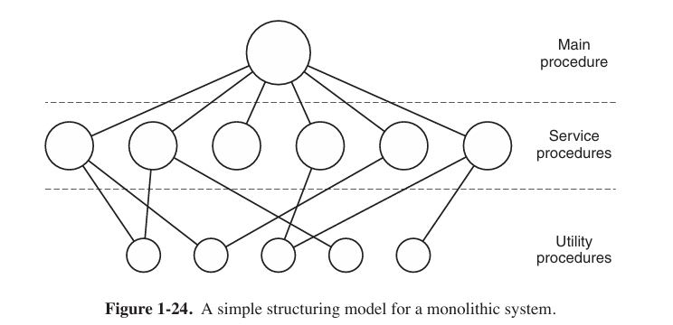
By far the most common organization, in the monolithic approach the entire operating system runs as a single program in kernel mode. The operating system is written as a collection of procedures, linked together into a single large executable binary program.
It is often used in embedded operating systems and early operating systems.
Layered Systems
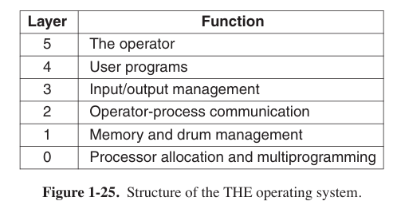
Virtual Machines
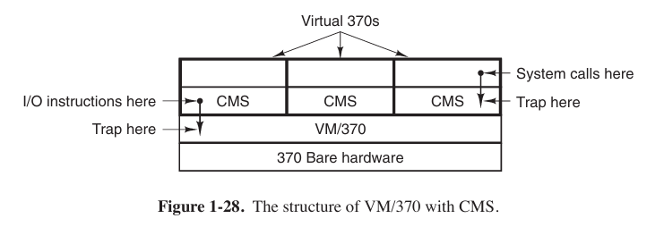
The heart of the system, known as the virtual machine monitor, runs on the bare hardware and does the multiprogramming, providing not one, but several virtual machines to the next layer up.
System Calls
The system calls available in the interface vary from one operating system to another. Usually we would use system calls open() (open a file), read() (read a file), write() (write a file), fork() (create a process), exit() (kill a process), and so on.
Processes in UNIX have their memory divided up into three segments: the text segment (i.e., the program code), the data segment (i.e., the variables), and the stack segment. The data segment grows upward and the stack grows downward.
The global variables contain in the data segment, while the local variables contain in the stack segment.
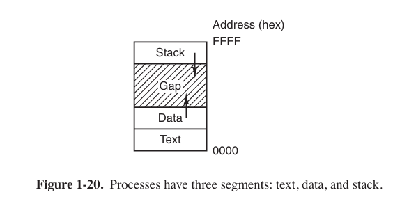
In Intel CPU, biggest address is the bottom of stack, so decline pointer means push something in stack.
So how system call works?
- In most case user use standard library function to use system call (say, printf() uses write()).
- Library function send parameters from user space to a certain position.
- Library function execute a special command that force CPU to switch to kernel space to execute calls.
- After executed, results would be stored to registers or somewhere else, then force CPU to switch to user space.
Process
A process is just an instance of an executing program. A process is also a basic unit when operating system allocating resources.
Kernel Mode and User Mode
Kernel mode and user mode are two different running status of CPU.
User mode: Processes is running under permission limited. When user processes need to use system call or something else, kernel mode is needed.
Kernel mode: Operating Systems are running under kernel mode that have the highest permission.
Process Creation
Four principal (主要的) events cause processes to be created
- System initialization.
- Execution of a process-creation system call by a running process.
- A user request to create a new process.
- Initiation of a batch job.
First of these is called implicit invocation (隐式调用), others are called explicit invocation.
In UNIX, the ps program can be used to list the running processes. In interactive systems, users can start a program by typing a command or (double) clicking on anicon.
In this C language program
1 | |
Child process would copies most of parent process such as data segment, data segment, heap and stack. But there are some difference like some status information.
The function fork() will return twice: the pid of child process in parent process, 0 in child process.
But the result on the DOS part does not relative to the pid, and it just constantly printing “haha” and “hehe”.
There are another call execl, and the example program is as follow
1 | |
When a process execute exec()， it would swap whole memory image.
But remember, the execl command just swap the following code to the command ls, so the child process will execute the ls command while the parent command continue to print “hehe”. Which means that a portion behind child process is just ls, not going loop for infinity. The Command execl itself does not create a new process.
All in all, fork() is to create a process while exec() is to execute a program.
Process Termination
Process might terminate in four conditions
- normal exit (voluntary)
When user click “exit” button or a program run out of code (includingexit(0)). - error exit (voluntary)
When a program encounters an error that is not fatal but cannot continue to procedure, it usually callsexit()system call and return a not 0 value. - fatal error (致命错误) (involuntary)
Examples:- When the program tries to access a invalid memory address (segment fault).
- Process divided into 0.
- Stack overflow.
- killed by other process (involuntary)
User terminate a process viakillcommand, for instance.
Process State
Three states a process might be in:
- Running (actually using the CPU)
- Ready (runnable, temporarily stopped to let another process run)
- Blocked (unable to run until some external event happens)
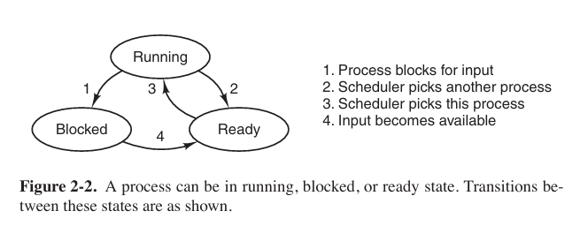
In fact there are far more than three states
Implementation of Processes
To implement the process model, the operating system maintains a table (an array of structures) that contains all about the process, called the process table, with one entry per process. (Some authors call these entries process control blocks, or PCB for short)
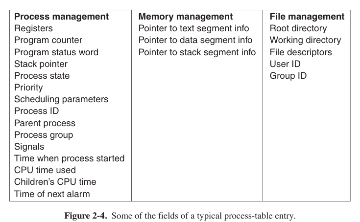
For short, a PCB concludes information as follow:
- Registers: All values in registers when process is pausing.
- Program Counter: The address that next command will be executed.
- Process Status Word: running, ready or blocked.
- Scheduling Parameters: Process priority, scheduling queue pointer and so on.
- Process ID (PID) and Parent Process ID (PPID): only way to mark a process.
- Memory Management Message: Relative to Page Table where PCB contains a pointer pointed to page table of this process.
- File Management Message: File list and file pointer.
- I/O Status: I/O devices allocated for process and unfinished I/O request list.
Modeling Multiprogramming
We know that most of using time is on I/O. Let the $n$ stands for the number of processes, $p$ stands for the I/O time, the CPU utilization can be computed by this formula:
$$
\text{CPU utilization} = 1-p^n
$$
The figure is as follow
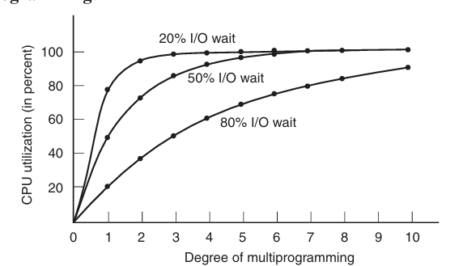
Thread
Why we need thread instead of creating a new process?
- Threads can share an address space and all of its data among themselves (in the same process), while processes is relatively independent.
- Threads are lighter weight than processes, which means they are easier to create and destroy than processes.
- When there is substantial computing and also substantial I/O, having threads allows these activities to overlap, thus speeding up the application.
Though threads can share same memories, each thread has its own stack.
The Classical Thread Model
What threads add to the process model is to allow multiple executions to take place in the same process environment, to a large degree independent of one another. When multithreading is present, processes usually start with a single thread present.
POSIX Thread
IEEE has defined a standard for threads in IEEE standard. The threads package it defines is called Pthreads. Most UNIX systems support it.
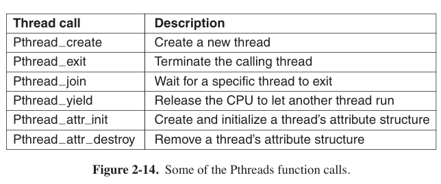
InterProcess Communication
Processes frequently need to communicate with other processes. In the following sections we will look at some of the issues related to this InterProcess Communication, or IPC.
Race Conditions and Critical Regions
In some operating systems, processes that are working together may share some common storage that each one can read and write. where two or more processes are reading or writing some shared data and the final result depends on who runs precisely when, are called race conditions. We need to avoid that happens.
How to avoid race conditions? The key to preventing trouble here and in many other situations involving shared memory, shared files, and shared everything else is to find some way to prohibit more than one process from reading and writing the shared data at the same time. What we need is mutual exclusion(互斥) that puts in critical region or critical section.
But avoiding race conditions is not sufficient for having parallel processes cooperate correctly and efficiently using shared data. We need four conditions to hold to have a good solution:
- No two processes may simultaneously(同时地) inside their critical regions.
- No assumptions may be made about speeds or the number of CPUs.
- No process running outside its critical region may block any process.
- No process should have to wait forever to enter its critical region.
中文译文：
- 临界区不能被两个进程同时进入。
- 不能提前预设CPU的数量。
- 不涉及临界区时，该进程不能阻挡其他进程运行。
- 不能发生进程永久等待以进入临界区的情况。
Mutual Exclusion with Busy Waiting
Disabling Interrupts (禁用中断)
On a single-processor system, the simplest solution is to have each process disable all interrupts just after entering its critical region. But it only useable in single-processor system.Lock Variables (锁住变量)
Most frequently-used method. Consider having a single, shared (lock) variable, initially 0. When a process wants to enter its critical region, it first tests the lock. If the lock is 0, the process sets it to 1 and enters the critical region. If the lock is already 1, the process just waits until it becomes 0.Strict Alternation (严格轮替)
Available when it is only 2 threads. of course more than 2 threads are also available, but not so flexible, which is called spin lock. However, this method violate (违反) “No process running outside its critical region may block another process.” principle.
More strictly, a spin lock means a lock that uses busy waiting. Busy waiting means Continuously testing a variable until some value appears. It is very suitable for this alternation.
a.c
1 | |
b.c
1 | |
- Peterson’s Solution
code as below
1 | |
Initially neither process is in its critical region. Now process 0 calls enter_region. It indicates its interest by setting its array element and sets turn to 0. Since process 1 is not interested, enter_region returns immediately. If process 1 now makes a call to enter_region, it will hang there until interested[0] goes to FALSE, an event happens only when process 0 calls leave_region to exits the critical region.
Semaphores
A semaphore is a counter that indicates how many processes or threads use this resource. It could have the value 0, indicating that no wakeups were saved, or some positive value if one or more wakeups were pending. A semaphore have two operations: down and up.
The down operation (also calls P operation) on a semaphore checks if the value is greater than 0. If so, it decrements the value and just continues. If the value is 0, the process is put to sleep without completing the down for the moment.
Checking the value, changing it, and possibly going to sleep, are all done as a single, indivisible atomic action. It is guaranteed that once a semaphore operation has started, no other process can access the semaphore until the operation has completed or blocked. We can imitate this action via using various locks.
The up operation (also calls V operation) increments the value of the semaphore addressed. If one or more processes were sleeping on that semaphore, unable to complete an earlier down operation, one of them is chosen by the system (e.g., at random) and is allowed to complete its down.
Semaphore has no concepts like “possession”, so any process waiting for critical region might get resource.
using semaphores, we can resolve the producer-consumer problem
1 | |
Here we have defined three semaphores
- mutex: a mutex semaphore to protect the critical region. When it down and up one time, a atomic action is completed.
- empty: when producer is going to produce, it downs the empty semaphore to indicate that it is about to produce. Producer will be blocked when the empty semaphore is smaller than 0 because it is no available position to produce then. When the semaphore is upped, it reminds the producer to produce again.
- full: A record of existing produce, when consumer is going to consume but the full semaphore is empty, it is blocked.
Mutexes
If mutex is like a key that who takes it will enter critical region, the semaphore might like a parking lot that have $N$ position: P operation, semaphore minus 1, stands cars waiting for a position and the position number minus 1. V operation, add 1, calling cars that are waiting are able to stop
A mutex is a simplified version of the semaphore, and it is a share variable that can be in two states: unlocked or locked.
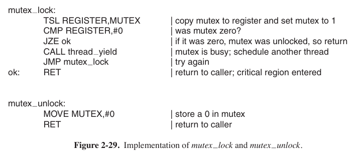
System call thread_yield is just a call to the scheduler in user space.
Pthreads provides a number of functions that can be used to synchronize threads.
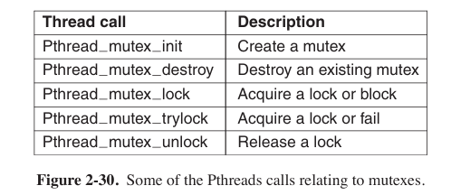
If call Pthread_mutex_lock cannot lock, the thread will sleep;
if call Pthread_mutex_trylock cannot lock, it will return false.
In addition to mutexes, Pthreads offers a second synchronization mechanism: condition variables. Mutexes are good for allowing or blocking access to a critical region. Condition variables allow threads to block due to some condition not being met. Almost always the two methods are used together.
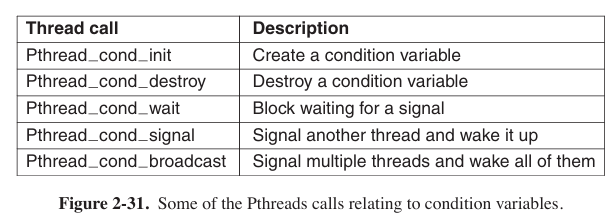
when a call Pthread_cond_wait execute, it will give up the lock at the same time.
using mutex, we can also solve producer-consumer problem
1 | |
First from producer. It gets mutex from pthread_mutex_lock, and waits until buffer == 0, if buffer does not empty, it calls pthread_cond_wait, releases lock, and waits for signal condp.
Now it comes to consumer, which is woken up now. It reads the buffer and make it empty while sending signal endp to wake up producer to produce. They go round until the program is exited.
Condition variable can avoid busy-waiting by making process into sleep status instead of looping to check whether condition is suitable, which is just a waste of CPU.
Scheduling
Scheduling in Batch Systems
- 1st-Come, 1st-Served
- Shortest Time 1st
- Shortest Remaining Time Next
It is the preemptive version of shortest job 1st
Scheduling in Interactive Systems
Round-Robin Scheduling
Each process is assigned a time interval, called its quantum, during which it is allowed to run. If the process is still running at the end of the quantum, the CPU is preempted and given to another process. If the process has blocked or finished before the quantum has elapsed, the CPU switching is done when the process blocks, of course. Many scheduling below are other types of round-robin.
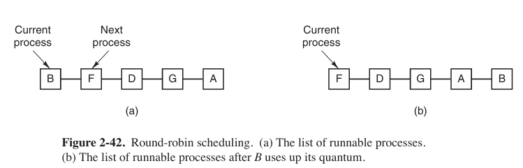
Priority Scheduling
Each process is assigned a priority. In a same priority they obey round-robin.
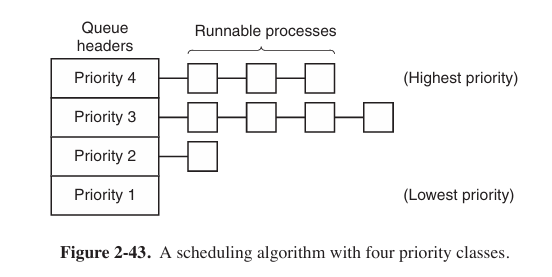
Guaranteed Scheduling
Operating system will keep track of each process and provide a guaranteed CPU occupation. The scheduler will priory select a process that has the lowest percentage to run.
Lottery Scheduling
Scheduling like lottery, then it will be a balance at a long time.
Classic IPC Problems
The Dining Philosophers Problem
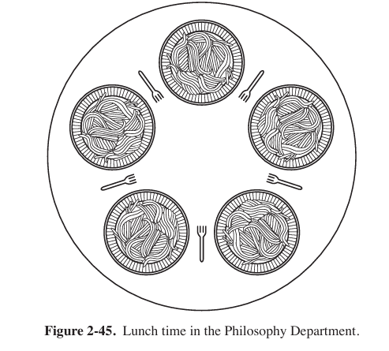
The life of a philosopher consists of alternating periods of eating and thinking. When a philosopher gets sufficiently hungry, she tries to acquire her left and right forks, one at a time, in either order. If successful in acquiring two forks, she eats for a while, then puts down the forks, and continues to think. The key question is: Can you write a program for each philosopher that does what it is supposed to do and never gets stuck?
Here is a solution
1 | |
The Readers and Writers Problem
Imagine, for example, an airline reservation system, with many competing processes wishing to read and write it. It is acceptable to have multiple processes reading the database at the same time, but if one process is updating (writing) the database, no other processes may have access to the database, not even readers. The question is how do you program the readers and the writers?
Here is a solution
1 | |
Deadlock
Resource deadlock is a common type of deadlock. A resource deadlock is a situation where two or more processes are blocked because each process is holding a resource and waiting for another resource acquired by some other process. Without external intervention, none of these processes can proceed further.
In simple terms, it occurs when multiple processes are waiting for each other to release resources, but since all processes are waiting and none releases their resources, they all remain stuck indefinitely.
Conditions for Resource Deadlocks
four conditions must hold for there to be a (resource) deadlock:
Mutual exclusion condition. Each resource is either currently assigned to exactly one process or is available.
Hold-and-wait condition. Processes currently holding resources that were granted earlier can request new resources.
No-preemption condition. Resources previously granted cannot be forcibly taken away from a process. They must be explicitly released by the process holding them.
Circular wait condition. There must be a circular list of two or more processes, each of which is waiting for a resource held by the next member of the chain.
死锁的4个必要条件（中文译文）
- 互斥。每份资源要么已分配到进程中，要么处于可用状态。
- 持有并等待。允许进程在持有先前已分配的资源的情况下请求新资源。
- 非抢占。已授予的资源不能被强制从进程中收回，必须由持有它们的进程显式释放。
- 环路等待。必须存在2个以上的进程构成的环路链，每个进程都在等待链条上的另一个进程持有的资源。
以下是一个会发生死锁的例子
1 | |
这样，线程 1 和 2 都在等待对方的 Object，从而产生了死锁。在这个程序中，要想避免死锁的问题。可以要求程序在获取另一个 Object 前先释放自己手里的 Object，或者让这两个程序用相同的顺序来获取锁。
Deadlock Prevention
The key to break deadlock is to break one of the 4 conditions.
Attacking the Mutual Exclusion Condition.
Just spool everything. If no resource were ever assigned exclusively to a single process, we would never hav e deadlocks. Luckily, some devices (such as printer) can be spooled.
Attacking the Hold and Wait Condition.
Require processes to request resources before starting, so a process never has to wait for what it needs. An immediate problem with this approach is that many processes do not know how many resources they will need until they have started running.
A slightly different way to break the hold-and-wait condition is to require a process requesting a resource to first temporarily release all the resources it currently holds. Then it tries to get everything it needs all at once.
Attacking the No Preemption
If a process has been assigned, say, the printer is in the middle of printing its output, forcibly taking away the printer because a needed plotter is not available. However, some resources can be virtualized to avoid this situation. Spooling printer output to the disk and allowing only the printer daemon access to the real printer eliminates deadlocks involving the printer, although it creates a potential for deadlock over disk space. With large disks though, running out of disk space is unlikely.
However, not all resources can be virtualized like this. For example, records in databases or tables inside the operating system must be locked to be used and therein lies the potential for deadlock.
Attacking the Circular Wait Condition
One way is simply to have a rule saying that a process is entitled only to a single resource at any moment. If it needs a second one, it must release the first one.
Another way to avoid the circular wait is to provide a global numbering of all the resources. Now the rule is this: processes can request resources whenever they want to, but all requests must be made in numerical order.
There are another solution as well, such as setting two-phase locking, which is usually used in database.
Ostrich Algorithm
OS do nothing about deadlock, the OS might cannot take detecting deadlock anymore.
Deadlock Detection and Recovery
Deadlock Detection with Multiple Resources of Each Type
We will now present a matrix-based algorithm for detecting deadlock among $n$ processes, $P_1$ through $P_n$.
Let the number of resource classes be $m$, with $E_i$ resources of class i (1 ≤ i ≤ m). And $E$ is the existing resource vector. It gives the total number of instances of each resource in existence.
For example, if class 1 is tape drives, then $E_1=2$ means the system has two tape drives.
Resources in existence
$$
E(E_1,E_2,E_3,\cdots ,E_m)
$$
Let $A$ be the available resource vector, with $A_i$ giving the number of instances of resource i that are currently available.
If both of our two tape drives are assigned, $A_i$ will be 0.
Resources available
$$
A(A_1,A_2,A_3,\cdots ,A_m)
$$
In particular, every resource is either allocated or is available. This observation is that
$$
\sum^n_{i=1}C_{ij}+A_j=E_j
$$
Now we have two matrix, $C$, the current allocation matrix, and $R$, the request matrix. Each row of matrix indicates what one process needs.
$$
\begin{array}{c}
\begin{bmatrix}
C_{11} & C_{12} & C_{13} & \cdots & C_{1m}\ C_{21} & C_{22} & C_{23} & \cdots & C_{2m} \ \vdots & \vdots & \vdots && \vdots \ C_{n1} & C_{n2} & C_{n3} & \cdots & C_{nm}
\end{bmatrix}
&
\begin{bmatrix}
R_{11} & R_{12} & R_{13} & \cdots & R_{1m} \ R_{21} & R_{22} & R_{23} & \cdots & R_{2m} \ \vdots & \vdots & \vdots && \vdots \ R_{n1} & R_{n2} & R_{n3} & \cdots & R_{nm}
\end{bmatrix}\
\text{Current allocation matrix} & \text{Resource matrix}
\end{array}
$$
Row $n$ on the left is current allocation to process $n$, on the right is what process $n$ needs.
Let us define the relation $A\leq B$ on two vectors A and B to mean that each element of $A$ is less than or equal to the corresponding element of $B$
Each process is initially said to be unmarked. As the algorithm progresses, processes will be marked, indicating that they are able to complete and are thus not deadlocked. When the algorithm terminates, any unmarked processes are known to be deadlocked. This algorithm assumes a worst-case scenario(场景): all processes keep all acquired resources until they exit.
The deadlock detection algorithm can now be given as follows.
- Look for an unmarked process, $P$, for which the $i$th row, $R \leq A$.
- If such a process is found, add the $i$th row of $C$ to $A$, mark the process, and go back to step 1.
- If no such process exists, the algorithm terminates.
When the algorithm finishes, all the unmarked processes, if any, are deadlocked.
使用中文解释一遍书中的例题。
假设存在的资源为
$$
E=(4\quad 2\quad 3\quad 1)
$$
目前资源的分配矩阵为
$$
\begin{array}{c}
\text{Current allocation matrix} \
C=\begin{bmatrix}
0 & 0 & 1 & 0 \ 2 & 0 & 0 & 1 \ 0 & 1 & 2 & 0
\end{bmatrix}
\end{array}
$$
请求矩阵为
$$
\begin{array}{c}
\text{Resource matrix} \
C=\begin{bmatrix}
2 & 0 & 0 & 1 \ 1 & 0 & 1 & 0 \ 2 & 1 & 0 & 0
\end{bmatrix}
\end{array}
$$
现在，只有线程3（第3行）能够匹配向量$A$，因此让线程3先使用资源，再释放。然后向量$A$的值变为（注意加上矩阵$C$中对应的值）
$$
A=(4\quad 2\quad 2\quad 0)
$$
然后线程2符合条件，$A$的值变为
$$
A=(4\quad 2\quad 2\quad 1)
$$
线程1符合条件。
至此，所有的线程均可以访问到资源，不会造成死锁。如果存在某线程无法分配到资源，则会发生死锁。
Deadlock Avoidance
We can also use similar algorithm to avoid deadlock.
$$
\begin{array}{c}
\begin{matrix}
A & 3 & 0 & 1 & 1 \ B & 0 & 1 & 0 & 0 \ C & 1 & 1 & 1 & 0 \ D & 1 & 1 & 0 & 1 \ E & 0 & 0 & 0 & 0
\end{matrix} &\quad &
\begin{matrix}
A & 1 & 1 & 0 & 0 \ B & 0 & 1 & 2 & 2 \ C & 3 & 1 & 0 & 0 \ D & 0 & 0 & 1 & 0 \ E & 2 & 1 & 0 & 0
\end{matrix} \
\text{Resource assigned} &\quad & \text{Resource still assigned}
\end{array} \
\begin{array}{c}
\text{E=(6\quad 3\quad 4\quad 2)} & \text{P=(5\quad 3\quad 2\quad 2)} & \text{A=(1\quad 0\quad 2\quad 0)}
\end{array}
$$
The three vectors, stands for existing resources, $E$, the possessed resources, $P$, and the available resources $A$.
Now $D$ is available, after executed, $A$ becomes $\text{A=(2\quad 1\quad 2\quad 1)}$. And then $E$ is available, but it does not release resource, so we turn to $A$. After $A$ releasing resource, others can execute. So there is no deadlock.